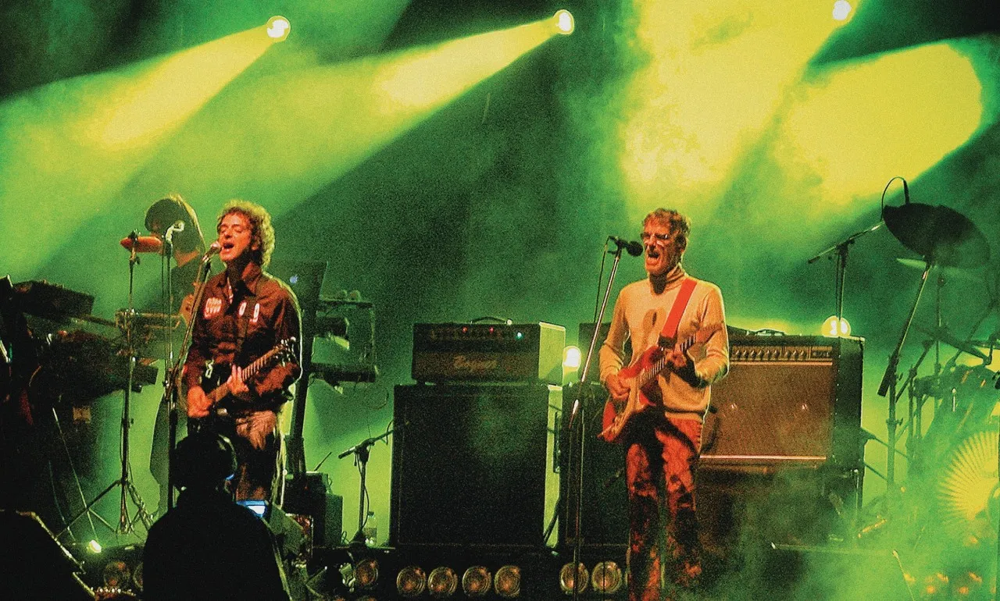
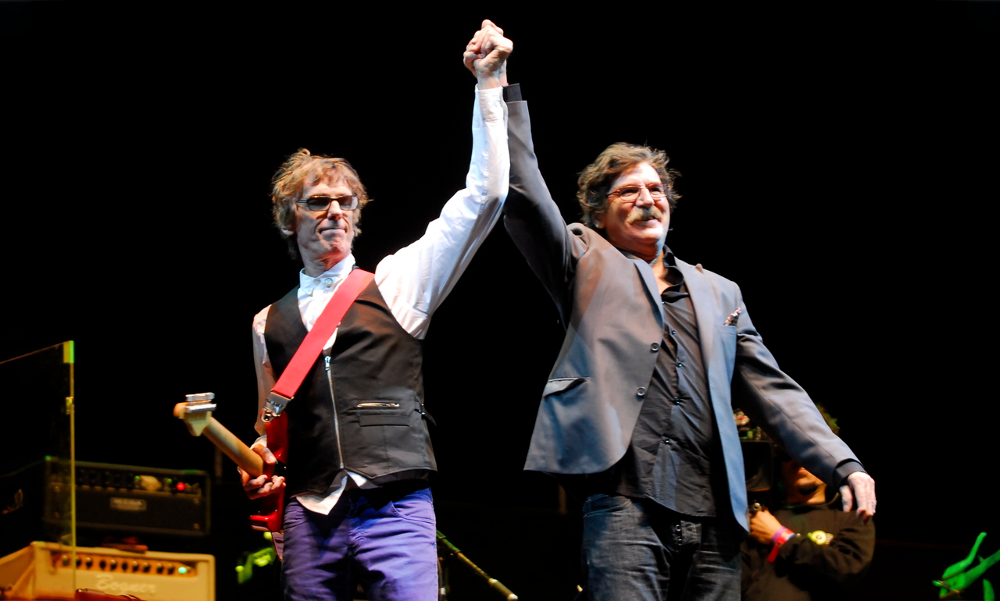

El último concierto
El 4 de diciembre de 2009, Luis Alberto Spinetta realizó su último
gran recital bajo el nombre "Spinetta y las Bandas Eternas" en el
Estadio Vélez Sarsfield. Fue un evento histórico que reunió a
todas las bandas que formaron parte de su carrera musical.
Duración y repertorio
El show duró más de cinco horas e incluyó más de 50 canciones.
Spinetta interpretó temas de Almendra, Pescado Rabioso, Invisible,
Spinetta Jade y su etapa solista, repasando toda su trayectoria
frente a una multitud emocionada.
Invitados especiales
El recital contó con la participación de músicos que fueron parte
de su historia, como Emilio del Guercio, Rodolfo García, Machi
Rufino, Javier Malosetti y Ricardo Mollo, entre otros. Cada
invitado aportó al espíritu celebratorio del evento.

Escenografía y producción
El concierto contó con una puesta en escena cuidada y minimalista,
con pantallas, luces y sonido de alta calidad. La producción
estuvo a la altura del evento, permitiendo que la música fuera la
verdadera protagonista de una noche mágica e irrepetible.
Un homenaje en vida
“Spinetta y las Bandas Eternas” fue pensado como un regalo para
sus seguidores y un tributo a su propia obra. Años después, tras
su fallecimiento en 2012, el recital tomó aún más valor como el
gran acto de despedida de uno de los artistas más importantes del
rock argentino.
Impacto cultural
Considerado uno de los recitales más importantes de la historia
del país, fue grabado en alta calidad y publicado posteriormente
como álbum y DVD. Es recordado como una obra maestra en vivo y un
testimonio del legado artístico de Spinetta.